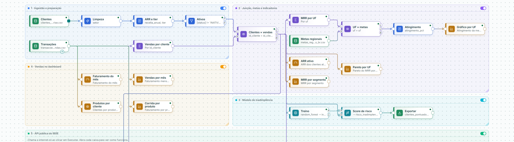

{{produto}}
{{organizacao_capa}}
{{slogan}}
Guia do Produto
Do dado bruto à decisão.
Troque o copiar e colar por um processo visual, que se refaz com um clique e mostra de onde veio cada número. Sem programar, com tudo rodando no seu computador.
